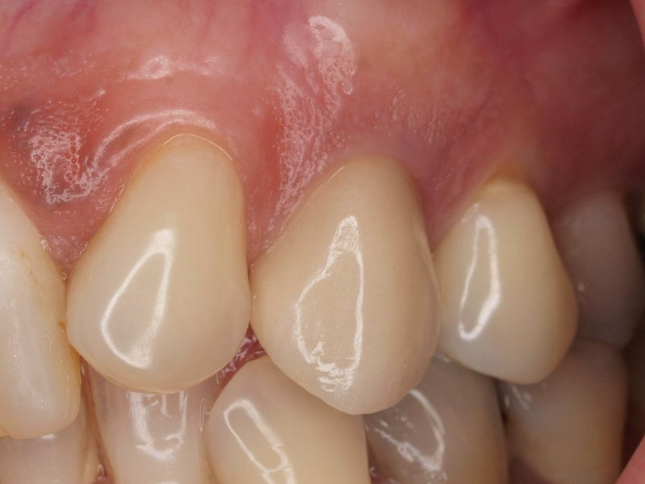
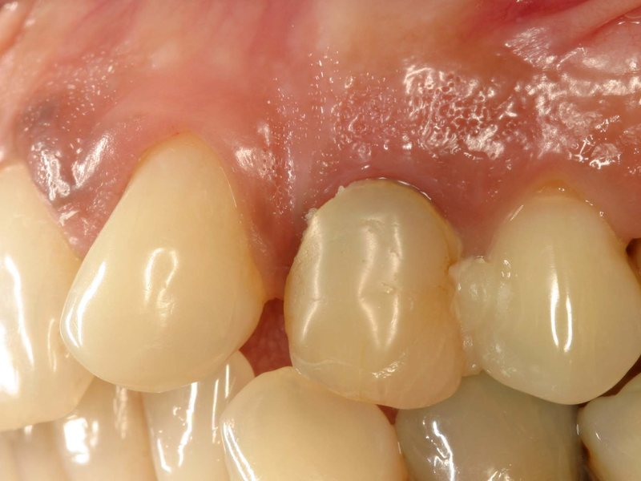
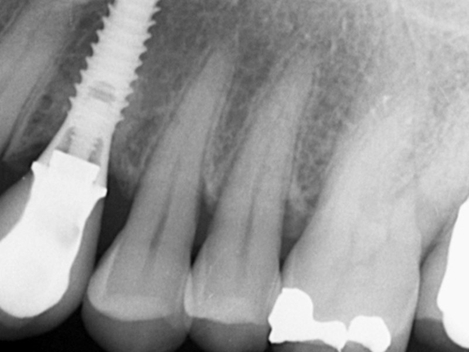
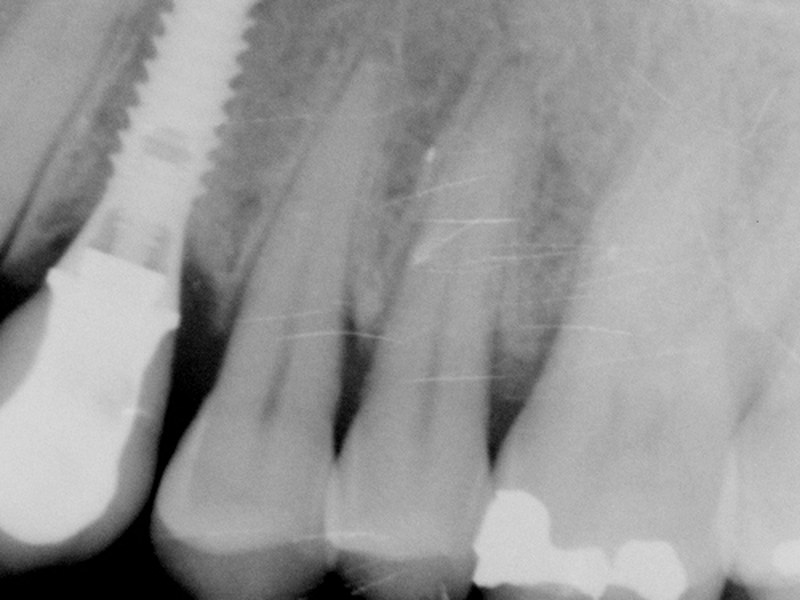
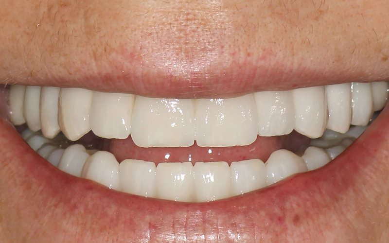
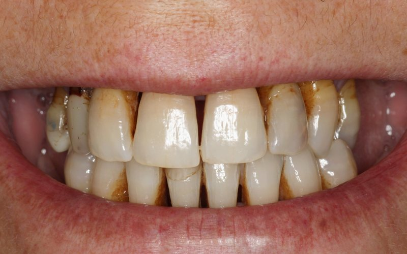
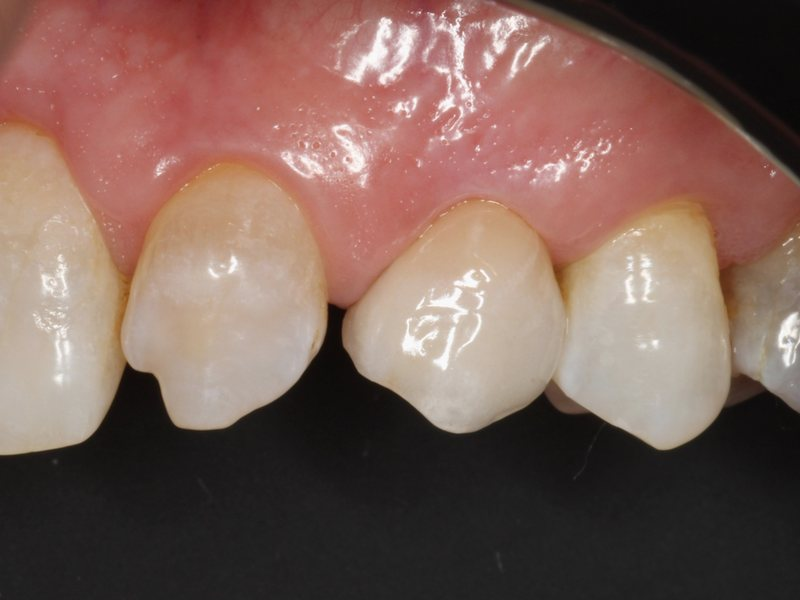
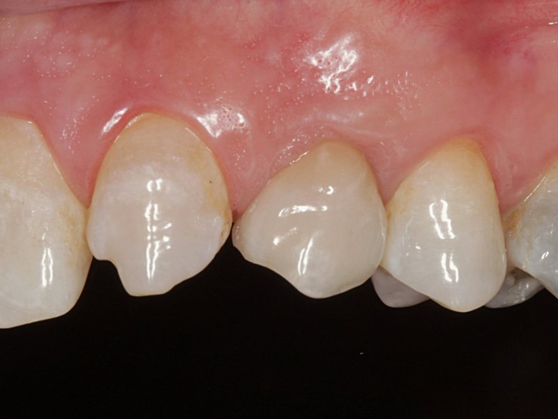

Implante unitario
Sustituye un solo diente sin tocar los dientes vecinos. La corona se diseña para integrarse en color y forma con el resto.
Inicio/Tratamientos/Implantes dentales
Reponemos uno, varios o todos los dientes con implantes planificados a partir de un estudio completo de hueso, encía y mordida. Desde 1990 en la calle del Dr. Fleming.
Si se reconoce en alguna de estas situaciones, merece la pena valorarlo en una primera visita.
Le falta uno o varios dientes y nota el hueco al masticar o sonreír.
Su prótesis removible se mueve, le roza o le resulta incómoda.
Evita ciertos alimentos porque no puede masticarlos bien.
Tiene un diente tan dañado que no es posible conservarlo.
Prefiere una solución fija en lugar de una dentadura que se quita y se pone.
Le han dicho que le falta hueso y quiere una segunda opinión.
El número de implantes y el tipo de prótesis dependen de cuántas piezas faltan y del estado del hueso. Se lo explicamos con su caso delante.
Sustituye un solo diente sin tocar los dientes vecinos. La corona se diseña para integrarse en color y forma con el resto.
Cuando faltan varias piezas seguidas, unos pocos implantes pueden sostener un puente fijo, sin necesidad de un implante por diente.
Para quien ha perdido todos los dientes de una arcada o lleva dentadura completa: una prótesis fija anclada sobre implantes.
Fotografías clínicas de pacientes tratados en la clínica. En la primera visita le enseñamos casos parecidos al suyo para que sepa qué esperar.
Cuando se han perdido todos los dientes de una arcada, una prótesis fija atornillada sobre implantes devuelve los dientes y el volumen de encía perdido. En este caso se rehabilitaron ambas arcadas: la superior sobre seis implantes y la inferior sobre cuatro.
Sustitución de piezas deterioradas en la zona de premolares superiores. El objetivo: que las nuevas coronas sobre implantes no se distingan de los dientes vecinos ni en forma ni en color.




Dientes muy deteriorados, con manchas y espacios entre ellos, sustituidos por prótesis fijas sobre implantes en ambas arcadas: la superior sobre siete implantes y la inferior sobre cuatro. Son fijas: el paciente no tiene que quitárselas.


Implante unitario para sustituir el primer premolar superior. La corona se diseñó para pasar desapercibida entre los dientes naturales, y diez años después sigue integrada en forma, color y encía.


Los incisivos inferiores asientan sobre un hueso muy estrecho, así que no hay margen para improvisar. Antes de operar se midió el hueso disponible en un escáner 3D y se eligió un implante a medida de ese espacio.
Planificación
Implante
Resultado
Faltaban los dientes posteriores superiores de ambos lados. Los implantes se planificaron en el ordenador sobre un escáner 3D y se colocaron con una férula impresa a medida, que lleva la fresa exactamente a la posición, el ángulo y la profundidad previstos.
Antes
Planificación
Cirugía guiada
Resultado
Imágenes de pacientes de la clínica publicadas con su consentimiento. Los resultados varían en cada caso.
En cada momento sabrá qué vamos a hacer, cuánto durará y cuánto costará.
Exploración, radiografías y las pruebas de imagen necesarias para conocer el hueso disponible.
Le explicamos las opciones, el número de implantes, los plazos y el presupuesto cerrado por escrito.
Colocamos los implantes con anestesia local y le damos pautas claras para los días siguientes.
Tras la integración del implante, colocamos los dientes definitivos y programamos revisiones.
Autor del libro Atlas Clínico de Implantología Oral y profesor invitado del Diploma Universitario en Implantología Clínica de la Universidad Complutense de Madrid desde 2006.
Muchos de nuestros pacientes llevan décadas confiándonos su salud bucodental. Hoy vienen también sus hijos y nietos.
Más de 35 años ejerciendo en el mismo barrio.
Estudiamos la boca completa antes de proponer nada.
Opciones, plazos y precio claros antes de empezar.
Le explicamos cada paso y resolvemos sus dudas.
Si su duda no está aquí, llámenos al 913 594 950 y se la resolvemos.
La colocación se realiza con anestesia local, por lo que durante la intervención no debería sentir dolor. En los días posteriores es habitual cierta inflamación o molestia, que suele controlarse con la medicación que le indicaremos.
Depende de cada caso. El implante necesita un periodo de integración con el hueso antes de colocar la prótesis definitiva, y en algunos casos se requieren tratamientos previos. En el plan de tratamiento le daremos un calendario concreto.
Muchas veces sí. En el estudio valoramos la cantidad y calidad del hueso y, si es necesario, le explicamos las técnicas de regeneración que permitirían colocar los implantes.
El precio depende del número de implantes, del tipo de prótesis y de si se necesitan tratamientos previos. Tras el estudio le entregamos un presupuesto cerrado y detallado por escrito.
Con una buena higiene y revisiones periódicas, los implantes pueden mantenerse durante muchos años. Por eso el mantenimiento forma parte del tratamiento.
La información de esta página es orientativa. El tratamiento adecuado, sus plazos y su coste se determinan siempre tras una valoración individual en consulta.
Atención con cita previa. Para cualquier consulta o urgencia durante nuestro horario, llámenos por teléfono.
Calle del Dr. Fleming, 54Chamartín · 28036 Madrid
| Lunes | 8:00 – 15:00 |
|---|---|
| Martes | 8:00 – 15:00 |
| Miércoles | 8:00 – 15:00 |
| Jueves | 8:00 – 15:00 |
| Viernes | 9:00 – 13:00 |
| Sábado | Cerrado |
| Domingo | Cerrado |
Llámenos y le damos cita en nuestra clínica de la calle del Dr. Fleming.